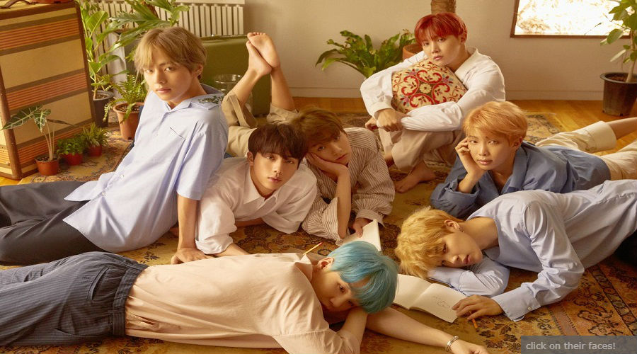

|


|
| the shipwreck in my head i am living despite of it all The name is Danica May, an 18 year-old girl who aspires to inspire other people |
 |
| “Doing your best” does not mean working yourself to the point of a mental breakdown. | |
| There is literally nothing in nature that blooms all year long, so do not expect yourself to do so. | |
|
 BTS. 3 letters but this group made such a huge impact to me. Bangtan seonyeondan or bulletproof boy scouts when translated in English, also called BTS is a k-pop group who are constantly breaking through records. The group consists of 7 members from different places from South Korea. I think it's normal for a fan to truly admire an artist. Well they are called idol for a reason. However, each member's story of how they started and dreamed inspires me. The group debuted June 13, 2013 with their album 2 kool 4 skool/Too Cool For School.... [Read More] |
|
| |
|
Best viewed in Internet Explorer at 1366x768 resolution.